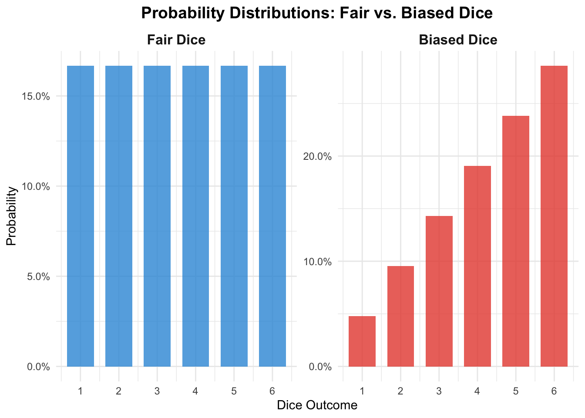
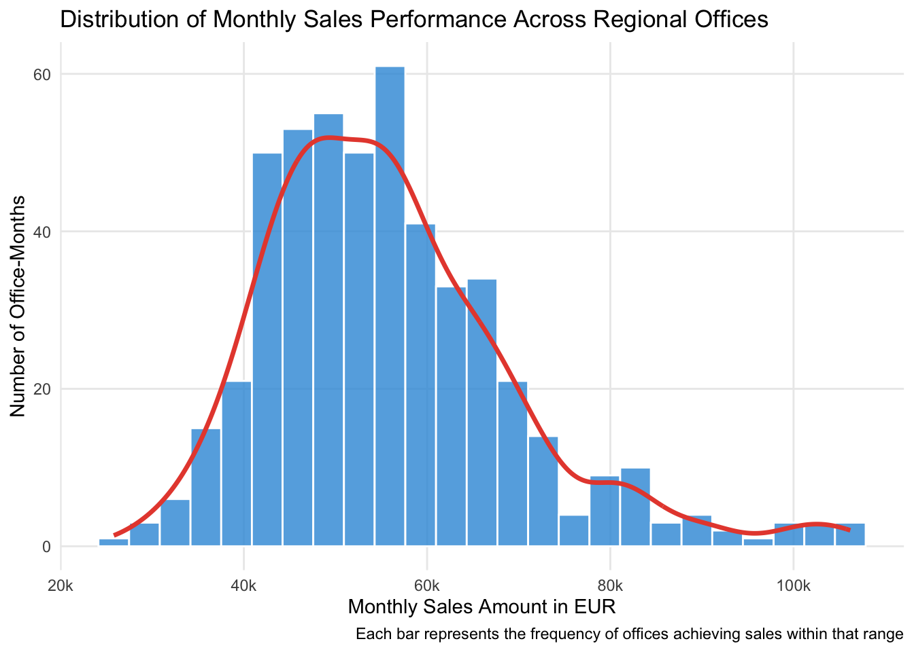
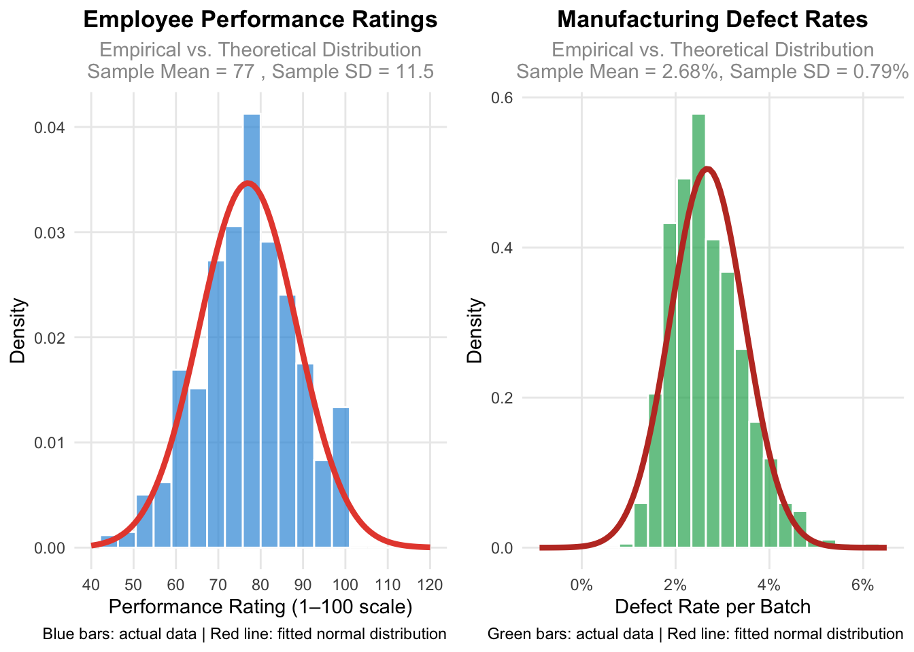
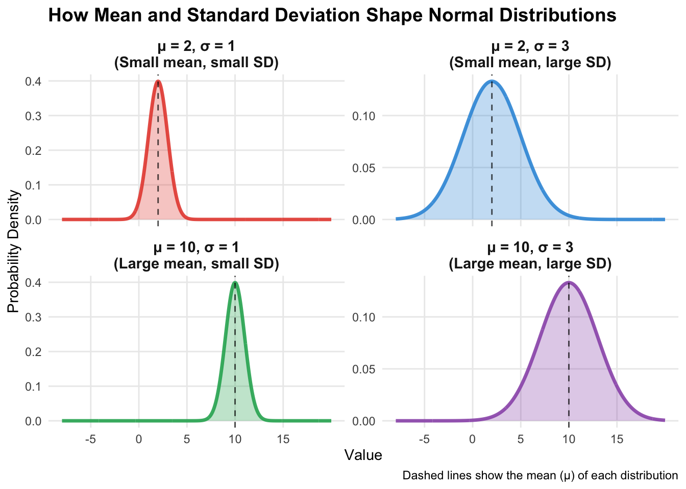
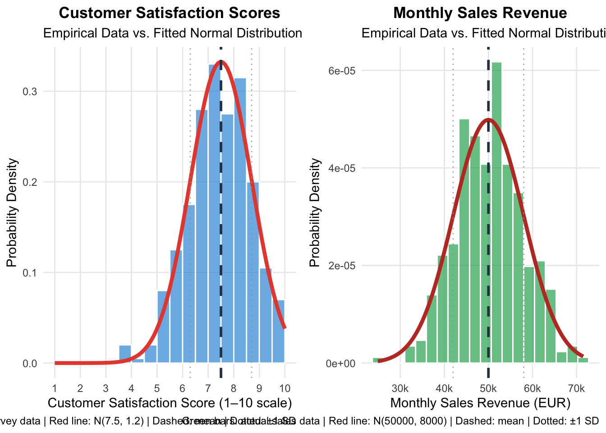

Packages used for R examples
library(ggplot2)
library(dplyr)
library(tidyr)
library(stringr)
library(purrr)
library(ggpubr)Claudius Gräbner-Radkowitsch
June 15, 2026
June 15, 2026
This page is part of the Statistics Recap track.
Previous resource: Descriptive Statistics in R
Next resource: Sampling and Statistical Inference
Before diving into more details of statistical analyses, we need a solid foundation in probability. Think of probability as the mathematical language we use to describe uncertainty. In social science and management research, uncertainty refers to situations where we cannot know the exact outcome beforehand, even though we might understand the general patterns or factors involved.
Example of Uncertainty: When launching a new product, you know that sales will depend on factors like price, marketing expenditures, and competitor actions. However, you cannot predict exactly how many units you’ll sell next month — customer preferences might shift, unexpected events could occur, or competitors might change their strategies. This unpredictability represents uncertainty.
Why does this matter? Probability theory serves two crucial purposes. First, it provides the mathematical framework we need to generalize findings from sample data to broader populations — the foundation of inferential statistics. Second, probability gives us reasonable comparison points or benchmarks for evaluating our observed data. It helps us determine whether our findings are genuinely surprising or just normal variation we should expect.
A random experiment is any process or activity whose outcome cannot be predicted with certainty beforehand, even when we understand the factors involved.
Key characteristics of random experiments:
Example 1: Product Launch. Launching a new product in a regional market is a random experiment. Even with extensive market research, you cannot know with certainty how many units will sell in the first quarter.
Example 2: Job Interview Process. Selecting a candidate through interviews is a random experiment. Despite standardized questions, the final hiring decision involves uncertainty about how well the candidate will perform on the job.
Example 3: Marketing Campaign. Running an advertising campaign represents a random experiment. Though you can estimate response rates based on historical data, the actual number of conversions remains uncertain until the campaign runs.
An event is a specific outcome or collection of outcomes from a random experiment that we are particularly interested in.
In the context of a product launch experiment, possible events include:
Notice how events allow us to focus on specific business outcomes rather than all possible details of the experiment.
Probability quantifies how likely an event is to occur. It provides a numerical scale from 0 to 1 (or 0% to 100%) where:
In business contexts, the concept of probability is essential when assessing risks and opportunities, making informed decisions under uncertainty, or communicating about likelihood in precise and transparent terms.
Example: Product Launch Probabilities. Based on market research and historical data, you might conclude that:
- The probability that total sales exceed 1M EUR is 70%: \(\mathbb{P}(R > 1M) = 0.7\)
- The probability that the project breaks even within 6 months is 85%: \(\mathbb{P}(BE) = 0.85\)
- The probability that the customer satisfaction score exceeds 8 is 60%: \(\mathbb{P}(CSC > 8) = 0.6\)
Conditional probability answers the question: “What’s the likelihood of Event A happening, given that Event B has already occurred or is known to be true?”
We write this as \(\mathbb{P}(A|B)\), read as “the probability of A given B.”
Example: Marketing Campaign Success
Consider the probability that a marketing campaign generates high conversion rates. While we can operate with a baseline probability:
\[\mathbb{P}(\text{High conversions}) = 0.3\]
additional information about the economic environment allows us to make more precise statements:
\[\mathbb{P}(\text{High conversions}|\text{Economic boom}) = 0.5\] \[\mathbb{P}(\text{High conversions}|\text{Economic recession}) = 0.15\]
The conditional probabilities differ significantly from the baseline, showing how context dramatically affects business outcomes.
These building blocks work together in every empirical analysis:
A random variable is a function whose value is a numerical outcome of a random experiment. Rather than dealing with abstract uncertainty, random variables give us concrete numbers we can analyze mathematically.
A random variable is a function with a specific purpose: it maps the possible outcomes of a random experiment to numerical values. It is a systematic rule that converts whatever might happen into numbers we can analyze.
Consider flipping a coin twice. Four outcomes are possible: HH, HT, TH, or TT. If we define a random variable \(X\) that counts the number of heads:
Notice that \(X\) is a fixed rule that always gives the same output for the same input. The randomness comes from not knowing which outcome will actually occur when we flip the coins.
Example 1: Customer satisfaction surveys represent a random process where each customer’s experience leads to a numerical rating — the random variable captures satisfaction levels across the customer base.
Example 2: Marketing campaign performance — the ROI percentage is a random variable that quantifies campaign effectiveness.
Example 3: Employee attendance — a random variable counting monthly sick days captures workforce availability.
Discrete random variables result from counting processes — they can only take specific, separated values. Customer satisfaction ratings (1, 2, …, 10) and sick day counts (0, 1, 2, …) are discrete.
Continuous random variables result from measuring processes — they can take any value within a range. Marketing ROI could be 5.23%, 5.234%, or 5.2341%. These values represent points along a continuous spectrum.
The distinction matters because discrete and continuous variables require different visualization techniques, different probability calculations, and different statistical tests.
The sample() function allows you to draw random values from a specified vector of possible outcomes, making it particularly well-suited for discrete random variables.
coin_outcomes_possible <- c("Heads", "Tails")
coin_outcomes_actual <- sample(x = coin_outcomes_possible, size = 10, replace = TRUE)
dice_outcomes_possible <- 1:6
dice_outcomes_actual <- sample(x = dice_outcomes_possible, size = 5, replace = TRUE)
# Sampling employees for a focus group (without replacement)
employee_ids <- 1:50
employee_sample <- sample(x = employee_ids, size = 8, replace = FALSE)You can also specify different probabilities for each outcome using the prob argument:
For true continuous random variables, R provides specialized functions for different probability distributions — which we explore in the next section.
A probability distribution describes how probability is allocated across all possible values of a random variable. It tells us not just what values are possible, but how likely each value is to occur.
fair_dice <- tibble(outcome = 1:6, probability = rep(1/6, 6), dice_type = "Fair Dice")
raw_probs <- 1:6
biased_dice <- tibble(outcome = 1:6, probability = raw_probs / sum(raw_probs), dice_type = "Biased Dice")
dice_data <- bind_rows(fair_dice, biased_dice) |>
mutate(dice_type = factor(dice_type, levels = c("Fair Dice", "Biased Dice")))
ggplot(dice_data, aes(x = outcome, y = probability, fill = dice_type)) +
geom_col(position = "dodge", width = 0.7, alpha = 0.8) +
facet_wrap(~dice_type, scales = "free_y") +
scale_x_continuous(breaks = 1:6) +
scale_y_continuous(labels = scales::percent_format(accuracy = 0.1)) +
labs(title = "Probability Distributions: Fair vs. Biased Dice",
x = "Dice Outcome", y = "Probability") +
theme_minimal() +
theme(legend.position = "none", strip.text = element_text(size = 12, face = "bold"),
plot.title = element_text(size = 14, face = "bold", hjust = 0.5)) +
scale_fill_manual(values = c("Fair Dice" = "#3498db", "Biased Dice" = "#e74c3c"))
Probability distributions answer crucial questions: Which outcomes should we expect most often? How likely are extreme results? What’s the typical range of variation we should plan for?
set.seed(123)
monthly_sales <- tibble(
sales_amount = rnorm(n = 500, mean = 45000, sd = 8000) |>
map_dbl(~ max(15000, .x + rexp(1, rate = 0.0001)))
) |>
mutate(sales_amount = round(sales_amount / 100) * 100)
ggplot(monthly_sales, aes(x = sales_amount)) +
geom_histogram(bins = 25, fill = "#3498db", color = "white", alpha = 0.8) +
geom_density(aes(y = after_stat(density) * nrow(monthly_sales) *
(max(monthly_sales$sales_amount) - min(monthly_sales$sales_amount)) / 25),
color = "#e74c3c", linewidth = 1.2) +
scale_x_continuous(
labels = scales::label_number(scale = 1/1000, suffix = "k", accuracy = 1),
breaks = scales::pretty_breaks(n = 6)) +
labs(
title = "Distribution of Monthly Sales Performance Across Regional Offices",
x = "Monthly Sales Amount in EUR", y = "Number of Office-Months",
caption = "Each bar represents the frequency of offices achieving sales within that range"
) +
theme_minimal() +
theme(panel.grid.minor = element_blank())
The normal distribution appears remarkably often when many small, independent factors combine to influence an outcome. It is characterized by:
Theoretical vs. empirical distributions. When we refer to a “theoretical” normal distribution, we mean the mathematically perfect, idealized version described by precise equations. When we collect real data, we get an empirical distribution — actual observations from the real world. Real data might have slight asymmetries or irregularities due to measurement limitations, sample size, or the complex nature of business processes. The key insight is that even when real data isn’t perfectly normal, it often resembles the theoretical distribution closely enough that we can use normal distribution methods for analysis.
set.seed(123)
performance_data <- tibble(
performance_rating = rnorm(n = 800, mean = 77, sd = 12) |>
pmax(1) |> pmin(100) |> round()
)
sample_mean <- mean(performance_data$performance_rating)
sample_sd <- sd(performance_data$performance_rating)
p1 <- ggplot(performance_data, aes(x = performance_rating)) +
geom_histogram(aes(y = after_stat(density)), bins = 20, fill = "#3498db", alpha = 0.7, color = "white") +
stat_function(fun = dnorm, args = list(mean = sample_mean, sd = sample_sd),
color = "#e74c3c", linewidth = 1.5) +
scale_x_continuous(breaks = seq(40, 120, 10), limits = c(40, 120)) +
labs(title = "Employee Performance Ratings",
subtitle = paste("Empirical vs. Theoretical Distribution\nSample Mean =", round(sample_mean, 1), ", Sample SD =", round(sample_sd, 1)),
x = "Performance Rating (1–100 scale)", y = "Density",
caption = "Blue bars: actual data | Red line: fitted normal distribution") +
theme_minimal() +
theme(plot.title = element_text(size = 13, face = "bold", hjust = 0.5),
plot.subtitle = element_text(size = 11, color = "gray60", hjust = 0.5),
panel.grid.minor = element_blank())
set.seed(456)
defect_data <- tibble(
defect_rate = exp(rnorm(n = 600, mean = log(2.5), sd = 0.3)) |> pmin(15) |> round(2)
)
defect_mean <- mean(defect_data$defect_rate)
defect_sd <- sd(defect_data$defect_rate)
p2 <- ggplot(defect_data, aes(x = defect_rate)) +
geom_histogram(aes(y = after_stat(density)), bins = 25, fill = "#27ae60", alpha = 0.7, color = "white") +
stat_function(fun = dnorm, args = list(mean = defect_mean, sd = defect_sd),
color = "#c0392b", linewidth = 1.5) +
scale_x_continuous(limits = c(-0.9, 6.5), breaks = seq(0, 6, 2),
labels = function(x) paste0(x, "%")) +
labs(title = "Manufacturing Defect Rates",
subtitle = paste0("Empirical vs. Theoretical Distribution\nSample Mean = ", round(defect_mean, 2), "%, Sample SD = ", round(defect_sd, 2), "%"),
x = "Defect Rate per Batch", y = "Density",
caption = "Green bars: actual data | Red line: fitted normal distribution") +
theme_minimal() +
theme(plot.title = element_text(size = 13, face = "bold", hjust = 0.5),
plot.subtitle = element_text(size = 11, color = "gray60", hjust = 0.5),
panel.grid.minor = element_blank())
ggarrange(p1, p2, ncol = 2)
Every probability distribution is governed by parameters — specific numbers that determine its exact shape and characteristics.
The normal distribution has two key parameters:
Mean \(\mu\): Controls where the distribution is centered. Change the mean and you slide the entire distribution left or right without changing its shape.
Standard deviation \(\sigma\): Controls how spread out the distribution is. A smaller standard deviation creates a narrow, tall bell curve; a larger one creates a wider, flatter bell curve.
We write \(X \sim \mathcal{N}(\mu, \sigma)\) to say that a random variable \(X\) follows a normal distribution with a particular mean and standard deviation.
x_values <- seq(-10, 20, length.out = 1000)
distributions <- tibble(
x = rep(x_values),
density_1 = dnorm(x_values, mean = 2, sd = 1),
density_2 = dnorm(x_values, mean = 2, sd = 3),
density_3 = dnorm(x_values, mean = 10, sd = 1),
density_4 = dnorm(x_values, mean = 10, sd = 3)
) |>
pivot_longer(cols = starts_with("density_"), names_to = "distribution",
values_to = "density", names_prefix = "density_") |>
mutate(
distribution_label = case_when(
distribution == "1" ~ "μ = 2, σ = 1\n(Small mean, small SD)",
distribution == "2" ~ "μ = 2, σ = 3\n(Small mean, large SD)",
distribution == "3" ~ "μ = 10, σ = 1\n(Large mean, small SD)",
distribution == "4" ~ "μ = 10, σ = 3\n(Large mean, large SD)"
),
distribution_label = factor(distribution_label, levels = c(
"μ = 2, σ = 1\n(Small mean, small SD)",
"μ = 2, σ = 3\n(Small mean, large SD)",
"μ = 10, σ = 1\n(Large mean, small SD)",
"μ = 10, σ = 3\n(Large mean, large SD)"
))
)
ggplot(distributions, aes(x = x, y = density)) +
geom_line(aes(color = distribution_label), linewidth = 1.2, alpha = 0.9) +
geom_area(aes(fill = distribution_label), alpha = 0.3) +
geom_vline(
data = tibble(
distribution_label = factor(c(
"μ = 2, σ = 1\n(Small mean, small SD)",
"μ = 2, σ = 3\n(Small mean, large SD)",
"μ = 10, σ = 1\n(Large mean, small SD)",
"μ = 10, σ = 3\n(Large mean, large SD)"
), levels = c(
"μ = 2, σ = 1\n(Small mean, small SD)",
"μ = 2, σ = 3\n(Small mean, large SD)",
"μ = 10, σ = 1\n(Large mean, small SD)",
"μ = 10, σ = 3\n(Large mean, large SD)"
)),
mean_value = c(2, 2, 10, 10)
),
aes(xintercept = mean_value), linetype = "dashed", color = "black", alpha = 0.7
) +
facet_wrap(~distribution_label, scales = "free_y", ncol = 2) +
scale_color_manual(values = c(
"μ = 2, σ = 1\n(Small mean, small SD)" = "#e74c3c",
"μ = 2, σ = 3\n(Small mean, large SD)" = "#3498db",
"μ = 10, σ = 1\n(Large mean, small SD)" = "#27ae60",
"μ = 10, σ = 3\n(Large mean, large SD)" = "#9b59b6"
)) +
scale_fill_manual(values = c(
"μ = 2, σ = 1\n(Small mean, small SD)" = "#e74c3c",
"μ = 2, σ = 3\n(Small mean, large SD)" = "#3498db",
"μ = 10, σ = 1\n(Large mean, small SD)" = "#27ae60",
"μ = 10, σ = 3\n(Large mean, large SD)" = "#9b59b6"
)) +
scale_x_continuous(breaks = seq(-5, 15, 5), limits = c(-8, 20)) +
labs(title = "How Mean and Standard Deviation Shape Normal Distributions",
x = "Value", y = "Probability Density",
caption = "Dashed lines show the mean (μ) of each distribution") +
theme_minimal() +
theme(legend.position = "none", strip.text = element_text(size = 11, face = "bold"),
plot.title = element_text(size = 14, face = "bold"), panel.grid.minor = element_blank())
Fitting a distribution. “Fitting” a distribution means choosing those parameter values that maximize the similarity between the theoretical probability distribution and the empirical distribution of the data.
set.seed(789)
customer_satisfaction <- tibble(
satisfaction_score = rnorm(n = 400, mean = 7.5, sd = 1.2) |>
pmax(1) |> pmin(10) |> round(1)
)
monthly_sales <- tibble(
sales_revenue = rnorm(n = 350, mean = 50000, sd = 8000) |> pmax(10000) |> round(-2)
)
p1 <- ggplot(customer_satisfaction, aes(x = satisfaction_score)) +
geom_histogram(aes(y = after_stat(density)), bins = 18, fill = "#3498db", alpha = 0.7, color = "white", boundary = 1) +
stat_function(fun = dnorm, args = list(mean = 7.5, sd = 1.2), color = "#e74c3c", linewidth = 1.5) +
geom_vline(xintercept = 7.5, color = "#2c3e50", linetype = "dashed", linewidth = 1) +
geom_vline(xintercept = c(7.5 - 1.2, 7.5 + 1.2), color = "#95a5a6", linetype = "dotted", alpha = 0.8) +
scale_x_continuous(breaks = 1:10, limits = c(1, 10)) +
labs(title = "Customer Satisfaction Scores",
subtitle = "Empirical Data vs. Fitted Normal Distribution",
x = "Customer Satisfaction Score (1–10 scale)", y = "Probability Density",
caption = "Blue bars: actual survey data | Red line: N(7.5, 1.2) | Dashed: mean | Dotted: ±1 SD") +
theme_minimal() +
theme(plot.title = element_text(size = 13, face = "bold", hjust = 0.5),
panel.grid.minor = element_blank())
p2 <- ggplot(monthly_sales, aes(x = sales_revenue)) +
geom_histogram(aes(y = after_stat(density)), bins = 20, fill = "#27ae60", alpha = 0.7, color = "white") +
stat_function(fun = dnorm, args = list(mean = 50000, sd = 8000), color = "#c0392b", linewidth = 1.5) +
geom_vline(xintercept = 50000, color = "#2c3e50", linetype = "dashed", linewidth = 1) +
geom_vline(xintercept = c(50000 - 8000, 50000 + 8000), color = "#95a5a6", linetype = "dotted", alpha = 0.8) +
scale_x_continuous(
labels = scales::label_number(scale = 1/1000, suffix = "k", accuracy = 1),
breaks = scales::pretty_breaks(n = 6)) +
labs(title = "Monthly Sales Revenue",
subtitle = "Empirical Data vs. Fitted Normal Distribution",
x = "Monthly Sales Revenue (EUR)", y = "Probability Density",
caption = "Green bars: actual sales data | Red line: N(50000, 8000) | Dashed: mean | Dotted: ±1 SD") +
theme_minimal() +
theme(plot.title = element_text(size = 13, face = "bold", hjust = 0.5),
panel.grid.minor = element_blank())
ggarrange(p1, p2, ncol = 2)
The normal distribution is used so frequently for good reasons:
Ubiquity in empirical data: Many measurements approximate normal distributions, especially when multiple factors influence outcomes.
Mathematical tractability: The normal distribution has elegant mathematical properties that make calculations manageable.
Foundation for inference: The Central Limit Theorem (covered in Sampling and Inference) shows that sample means tend toward normal distributions regardless of the underlying population shape, making the normal distribution central to statistical inference.
Benchmark for comparison: Understanding the normal distribution helps you recognize when your data deviates from this pattern, often revealing important insights.
Still, you should be aware that the normal distribution is sometimes used in situations where it is not the best choice and might even be misleading. For an overview of other distributions and when to use them, see Common Probability Distributions.
Four functions give you everything you need for working with the normal distribution. Each takes the same basic arguments: the value(s) of interest, the mean, and sd. By default, they assume the standard normal distribution (mean = 0, sd = 1).
dnorm() (for density) calculates the height of the normal curve at any given point. Use this when creating smooth curves for visualization or when you want to know how “concentrated” the probability is at a specific value.
dnorm(0) # Height at the peak (mean)
dnorm(8, mean = 7.5, sd = 1.2) # Density at satisfaction score of 8
# Useful for plotting smooth curves:
ggplot() +
stat_function(fun = dnorm, args = list(mean = 7.5, sd = 1.2), xlim = c(4, 11)) +
labs(title = "Customer Satisfaction Distribution", x = "Satisfaction Score", y = "Density") +
theme_linedraw()pnorm() (for probability) calculates cumulative probabilities — “what’s the probability that a randomly selected value is less than or equal to X?” This is your go-to tool for computing areas under the normal curve, which correspond to probabilities of events occurring.
# What's the probability that monthly sales are €45,000 or less?
pnorm(45000, mean = 50000, sd = 8000)
# What's the probability of sales exceeding €60,000?
1 - pnorm(60000, mean = 50000, sd = 8000)
# Probability of sales falling between €45,000 and €55,000
pnorm(55000, mean = 50000, sd = 8000) - pnorm(45000, mean = 50000, sd = 8000)
# Customer satisfaction: probability of score above 8.5
1 - pnorm(8.5, mean = 7.5, sd = 1.2)qnorm() (for quantiles) works as the inverse of pnorm() — given a probability, it tells you what value corresponds to that percentile. While pnorm() tells you the probability of scoring below a certain value, qnorm() tells you what score you need to achieve to be in the top 10% of performers.
# Customer satisfaction: what score puts a customer in the top 10%?
qnorm(0.9, mean = 7.5, sd = 1.2)
# Performance thresholds: bottom 25% vs. top 25%
qnorm(0.25, mean = 75, sd = 12)
qnorm(0.75, mean = 75, sd = 12)
# What revenue puts you in the top 5% of months?
qnorm(0.95, mean = 50000, sd = 8000)
# Middle 95% boundaries
qnorm(c(0.025, 0.975), mean = 100, sd = 15)rnorm() (for random numbers) generates random samples from a normal distribution. This is important for creating example data or testing statistical methods under known conditions.
set.seed(123)
customer_scores <- rnorm(100, mean = 7.5, sd = 1.2)
monthly_sales <- rnorm(12, mean = 50000, sd = 8000)
# Verify simulation matches theoretical parameters
large_sample <- rnorm(1000, mean = 7.5, sd = 1.2)
mean(large_sample) # Should be close to 7.5
sd(large_sample) # Should be close to 1.2The expected value of a random variable represents the average outcome you would observe if you could repeat the underlying random process infinitely many times under identical conditions. Think of it as the “center of gravity” of a probability distribution.
The expected value is not a prediction of the next outcome — it is a summary of long-term behavior.
Business Example: A new product launch has these potential outcomes:
- 30% chance of losing €100,000: \(\mathbb{P}(X = -100000) = 0.3\)
- 50% chance of breaking even (€0): \(\mathbb{P}(X = 0) = 0.5\)
- 20% chance of gaining €300,000: \(\mathbb{P}(X = 300000) = 0.2\)
\[\mathbb{E}(X) = 0.3 \cdot (-100000) + 0.5 \cdot 0 + 0.2 \cdot 300000 = 30000\]
This means if you launched many similar products under similar conditions, you would average about €30,000 profit per launch. It does not mean any individual launch will yield exactly €30,000!
A common misconception is confusing expected value with the most likely outcome.
When rolling a standard die, the expected value is 3.5 (calculated as \(1/6 \times 1 + 1/6 \times 2 + \ldots + 1/6 \times 6 = 3.5\)). However, you cannot actually roll 3.5! The expected value represents the average across many rolls, not the outcome of any single roll.
Linearity: If you multiply all outcomes by a constant or add a constant, the expected value changes in the same predictable way.
If expected quarterly profit in Germany is €150,000 and the exchange rate is 1.10 USD per euro: \[\mathbb{E}[\text{Profit}_\text{USD}] = 1.10 \times 150{,}000 = \text{USD } 165{,}000\] If a fixed quarterly tax of USD 20,000 applies: \[\mathbb{E}[\text{Profit}_\text{AfterTax}] = 165{,}000 + 20{,}000 = \text{USD } 185{,}000\]
Additivity for independent variables: When random variables are independent, the expected value of their sum equals the sum of their expected values.
When planning next year’s budget from three independent business units: \[\mathbb{E}[\text{Total Revenue}] = 500{,}000 + 300{,}000 + 150{,}000 = \text{EUR } 950{,}000\]
These properties allow you to break complex uncertain situations into manageable components and combine them systematically.
As covered in Descriptive Statistics, we focus there on summarizing and understanding datasets we have already collected. Now that we have explored probability concepts, it is essential to understand how these two areas connect.
When you calculate the mean of customer satisfaction scores from 100 surveyed customers, you are computing a sample mean using descriptive statistics. But the expected value of customer satisfaction represents the theoretical average you would get if you could survey all customers infinitely many times. Your sample mean serves as an estimate of the expected value.
| Probability Concept | Descriptive Statistic | Relationship |
|---|---|---|
| Expected Value (μ) | Sample Mean (x̄) | The sample mean estimates the expected value; as sample size increases, it converges to the true expected value |
| Population Variance | Sample Variance (σ²) | Sample variance estimates population variance; both measure spread, but the sample version adjusts for estimation uncertainty |
| Probability Distribution | Sample Distribution (Histogram) | Sample histogram approximates the shape of the probability distribution; more data yields better approximation |
| Population Median | Sample Median | Sample median estimates the population median |
| Probability P(X = x) | Relative Frequency | Sample relative frequency estimates probability |
Note that the estimators above are not necessarily the best possible estimators — how to find optimal estimators is a question of inferential statistics.
Understanding these connections transforms how you think about data analysis. Descriptive statistics tell you what happened in your sample, but probability concepts help you predict what might happen in the future or with different samples.
When you calculate that the average customer spends €347, you are not just describing past behavior — you are estimating a parameter that helps predict future customer behavior. When you observe that spending appears normally distributed in your sample, you are gathering evidence about the probability distribution that generates customer spending patterns.
The fundamental concepts discussed in this page work together to create a coherent framework for understanding and analyzing uncertainty:
Random variables transform abstract uncertain phenomena into concrete numerical outcomes we can analyze mathematically. They bridge the gap between real-world uncertainty and statistical analysis.
Probability distributions provide complete descriptions of how uncertainty is structured, telling us not just what can happen, but how likely different outcomes are. Parameters allow us to customize distributions to match specific situations.
Expected values distill complex uncertain situations into single summary numbers useful for planning and decision-making.
The bridge between descriptive and probability concepts shows how sample statistics estimate population parameters, preparing you to understand the uncertainty inherent in all statistical inference procedures.
These concepts form the foundation for all advanced statistical techniques. When you encounter confidence intervals, hypothesis testing, and effect sizes, you will see these fundamental ideas appearing repeatedly. Understanding them well means you can apply statistical procedures appropriately and interpret results correctly, rather than merely memorizing formulas.
Track overview: A Recap of Undergraduate Statistics · Next in the track: Sampling and Statistical Inference
For reference: Common Probability Distributions covers binomial, Poisson, uniform, exponential, beta, and gamma distributions.
@misc{gräbner-radkowitsch2026,
author = {Gräbner-Radkowitsch, Claudius},
editor = {Gräbner-Radkowitsch, Claudius},
title = {Essentials of {Probability} {Theory} for {Statistics}},
date = {2026-06-15},
url = {https://euf-methodology-hub.netlify.app/resources/statistics/probability-theory-essentials},
langid = {en}
}
---
title: "Essentials of Probability Theory for Statistics"
description: "A conceptual and practical introduction to probability theory: random experiments, events, conditional probability, random variables, the normal distribution, expected values, and the bridge to descriptive statistics."
author: "Claudius Gräbner-Radkowitsch"
date: 2026-06-15
date-modified: 2026-06-15
image: ../../assets/images/statistics.png
learning-objectives:
- "Define random experiments, events, and probability using formal notation and business examples"
- "Distinguish between discrete and continuous random variables and use `sample()` to simulate them in R"
- "Describe the normal distribution and its parameters, and use `dnorm()`, `pnorm()`, `qnorm()`, and `rnorm()` for probability calculations"
- "Compute expected values and apply their linearity and additivity properties to practical scenarios"
- "Explain how sample statistics relate to population parameters and probability concepts"
categories:
- statistics
- R
- BA
- MA
- reading
level:
- BA
- MA
content-type: reading
citation:
type: entry
container-title: "Methods Hub"
title: "Essentials of Probability Theory for Statistics"
editor:
- name: "Claudius Gräbner-Radkowitsch"
url: https://euf-methodology-hub.netlify.app/resources/statistics/probability-theory-essentials
---
::: {.callout-note collapse="true"}
## Part of the Statistics Recap Track
This page is part of the [Statistics Recap track](../../tracks/statistics-recap.qmd).
**Previous resource:** [Descriptive Statistics in R](descriptive-statistics.qmd)
**Next resource:** [Sampling and Statistical Inference](sampling-and-inference.qmd)
:::
```{r}
#| code-summary: "Packages used for R examples"
#| message: false
#| warning: false
library(ggplot2)
library(dplyr)
library(tidyr)
library(stringr)
library(purrr)
library(ggpubr)
```
# Why Probability Matters in Empirical Research
Before diving into more details of statistical analyses, we need a solid foundation in probability. Think of probability as the mathematical language we use to describe uncertainty. In social science and management research, uncertainty refers to situations where we cannot know the exact outcome beforehand, even though we might understand the general patterns or factors involved.
> **Example of Uncertainty**: When launching a new product, you know that sales will depend on factors like price, marketing expenditures, and competitor actions. However, you cannot predict exactly how many units you'll sell next month — customer preferences might shift, unexpected events could occur, or competitors might change their strategies. This unpredictability represents uncertainty.
Why does this matter? Probability theory serves two crucial purposes. First, it provides the mathematical framework we need to generalize findings from sample data to broader populations — the foundation of inferential statistics. Second, probability gives us reasonable comparison points or benchmarks for evaluating our observed data. It helps us determine whether our findings are genuinely surprising or just normal variation we should expect.
# The Basic Building Blocks: Experiments, Events, and Probability
## Random Experiments: The Source of Uncertainty
A **random experiment** is any process or activity whose outcome cannot be predicted with certainty beforehand, even when we understand the factors involved.
**Key characteristics of random experiments:**
- The outcome is uncertain before the experiment occurs
- We can usually identify all possible outcomes
- Under similar conditions, different outcomes may occur
> **Example 1: Product Launch.** Launching a new product in a regional market is a random experiment. Even with extensive market research, you cannot know with certainty how many units will sell in the first quarter.
> **Example 2: Job Interview Process.** Selecting a candidate through interviews is a random experiment. Despite standardized questions, the final hiring decision involves uncertainty about how well the candidate will perform on the job.
> **Example 3: Marketing Campaign.** Running an advertising campaign represents a random experiment. Though you can estimate response rates based on historical data, the actual number of conversions remains uncertain until the campaign runs.
## Events: What We Care About
An **event** is a specific outcome or collection of outcomes from a random experiment that we are particularly interested in.
In the context of a product launch experiment, possible events include:
- Event A: "Sales exceed €1 million in the first quarter"
- Event B: "The product breaks even within six months"
- Event C: "Customer satisfaction scores average above 8.0"
Notice how events allow us to focus on specific business outcomes rather than all possible details of the experiment.
## Probability: Measuring Likelihood
**Probability** quantifies how likely an event is to occur. It provides a numerical scale from 0 to 1 (or 0% to 100%) where:
- Probability = 0 means the event is impossible
- Probability = 1 means the event is certain
- Probability = 0.5 means the event is equally likely to occur or not occur
In business contexts, the concept of probability is essential when assessing risks and opportunities, making informed decisions under uncertainty, or communicating about likelihood in precise and transparent terms.
> **Example: Product Launch Probabilities.** Based on market research and historical data, you might conclude that:
>
> - The probability that total sales exceed 1M EUR is 70%: $\mathbb{P}(R > 1M) = 0.7$
> - The probability that the project breaks even within 6 months is 85%: $\mathbb{P}(BE) = 0.85$
> - The probability that the customer satisfaction score exceeds 8 is 60%: $\mathbb{P}(CSC > 8) = 0.6$
## Conditional Probability: When Context Matters
**Conditional probability** answers the question: "What's the likelihood of Event A happening, given that Event B has already occurred or is known to be true?"
We write this as $\mathbb{P}(A|B)$, read as "the probability of A given B."
**Example: Marketing Campaign Success**
Consider the probability that a marketing campaign generates high conversion rates. While we can operate with a baseline probability:
$$\mathbb{P}(\text{High conversions}) = 0.3$$
additional information about the economic environment allows us to make more precise statements:
$$\mathbb{P}(\text{High conversions}|\text{Economic boom}) = 0.5$$
$$\mathbb{P}(\text{High conversions}|\text{Economic recession}) = 0.15$$
The conditional probabilities differ significantly from the baseline, showing how context dramatically affects business outcomes.
## Short Recap
These building blocks work together in every empirical analysis:
1. **Identify the random experiment**: What uncertain process are you analyzing?
2. **Define relevant events**: What specific outcomes matter for your decision?
3. **Assess probabilities**: What's the likelihood of each event?
4. **Consider conditional probabilities**: How does available information change these likelihoods?
# Random Variables: Capturing Numerical Outcomes of Uncertain Processes
A **random variable** is a function whose value is a numerical outcome of a random experiment. Rather than dealing with abstract uncertainty, random variables give us concrete numbers we can analyze mathematically.
## Why is a Random Variable Called a "Function"?
A random variable is a function with a specific purpose: it maps the possible outcomes of a random experiment to numerical values. It is a systematic rule that converts whatever might happen into numbers we can analyze.
Consider flipping a coin twice. Four outcomes are possible: HH, HT, TH, or TT. If we define a random variable $X$ that counts the number of heads:
- $X(HH) = 2$ (two heads)
- $X(HT) = 1$ (one head)
- $X(TH) = 1$ (one head)
- $X(TT) = 0$ (zero heads)
Notice that $X$ is a fixed rule that always gives the same output for the same input. The randomness comes from not knowing which outcome will actually occur when we flip the coins.
## Examples of Random Variables
> **Example 1**: Customer satisfaction surveys represent a random process where each customer's experience leads to a numerical rating — the random variable captures satisfaction levels across the customer base.
> **Example 2**: Marketing campaign performance — the ROI percentage is a random variable that quantifies campaign effectiveness.
> **Example 3**: Employee attendance — a random variable counting monthly sick days captures workforce availability.
## Discrete vs. Continuous Random Variables
**Discrete random variables** result from counting processes — they can only take specific, separated values. Customer satisfaction ratings (1, 2, ..., 10) and sick day counts (0, 1, 2, ...) are discrete.
**Continuous random variables** result from measuring processes — they can take any value within a range. Marketing ROI could be 5.23%, 5.234%, or 5.2341%. These values represent points along a continuous spectrum.
The distinction matters because discrete and continuous variables require different visualization techniques, different probability calculations, and different statistical tests.
## Using Random Variables in R
The `sample()` function allows you to draw random values from a specified vector of possible outcomes, making it particularly well-suited for discrete random variables.
```{r}
#| code-summary: "Discrete RV in R using sample()"
coin_outcomes_possible <- c("Heads", "Tails")
coin_outcomes_actual <- sample(x = coin_outcomes_possible, size = 10, replace = TRUE)
dice_outcomes_possible <- 1:6
dice_outcomes_actual <- sample(x = dice_outcomes_possible, size = 5, replace = TRUE)
# Sampling employees for a focus group (without replacement)
employee_ids <- 1:50
employee_sample <- sample(x = employee_ids, size = 8, replace = FALSE)
```
You can also specify different probabilities for each outcome using the `prob` argument:
```{r}
#| code-summary: "Using different probabilities in sample()"
purchase_outcomes <- c("No Purchase", "Small Purchase", "Large Purchase")
purchase_probabilities <- c(0.7, 0.2, 0.1)
purchases <- sample(x = purchase_outcomes, size = 100, replace = TRUE, prob = purchase_probabilities)
```
For true continuous random variables, R provides specialized functions for different probability distributions — which we explore in the next section.
# Probability Distributions: The Shape of Uncertainty
A probability distribution describes how probability is allocated across all possible values of a random variable. It tells us not just what values are possible, but how likely each value is to occur.
```{r}
#| code-summary: "Fair vs. biased dice — two probability distributions"
fair_dice <- tibble(outcome = 1:6, probability = rep(1/6, 6), dice_type = "Fair Dice")
raw_probs <- 1:6
biased_dice <- tibble(outcome = 1:6, probability = raw_probs / sum(raw_probs), dice_type = "Biased Dice")
dice_data <- bind_rows(fair_dice, biased_dice) |>
mutate(dice_type = factor(dice_type, levels = c("Fair Dice", "Biased Dice")))
ggplot(dice_data, aes(x = outcome, y = probability, fill = dice_type)) +
geom_col(position = "dodge", width = 0.7, alpha = 0.8) +
facet_wrap(~dice_type, scales = "free_y") +
scale_x_continuous(breaks = 1:6) +
scale_y_continuous(labels = scales::percent_format(accuracy = 0.1)) +
labs(title = "Probability Distributions: Fair vs. Biased Dice",
x = "Dice Outcome", y = "Probability") +
theme_minimal() +
theme(legend.position = "none", strip.text = element_text(size = 12, face = "bold"),
plot.title = element_text(size = 14, face = "bold", hjust = 0.5)) +
scale_fill_manual(values = c("Fair Dice" = "#3498db", "Biased Dice" = "#e74c3c"))
```
Probability distributions answer crucial questions: Which outcomes should we expect most often? How likely are extreme results? What's the typical range of variation we should plan for?
```{r}
#| code-summary: "Distribution of monthly sales performance"
set.seed(123)
monthly_sales <- tibble(
sales_amount = rnorm(n = 500, mean = 45000, sd = 8000) |>
map_dbl(~ max(15000, .x + rexp(1, rate = 0.0001)))
) |>
mutate(sales_amount = round(sales_amount / 100) * 100)
ggplot(monthly_sales, aes(x = sales_amount)) +
geom_histogram(bins = 25, fill = "#3498db", color = "white", alpha = 0.8) +
geom_density(aes(y = after_stat(density) * nrow(monthly_sales) *
(max(monthly_sales$sales_amount) - min(monthly_sales$sales_amount)) / 25),
color = "#e74c3c", linewidth = 1.2) +
scale_x_continuous(
labels = scales::label_number(scale = 1/1000, suffix = "k", accuracy = 1),
breaks = scales::pretty_breaks(n = 6)) +
labs(
title = "Distribution of Monthly Sales Performance Across Regional Offices",
x = "Monthly Sales Amount in EUR", y = "Number of Office-Months",
caption = "Each bar represents the frequency of offices achieving sales within that range"
) +
theme_minimal() +
theme(panel.grid.minor = element_blank())
```
## The Normal Distribution: Nature's Favourite Pattern
The normal distribution appears remarkably often when many small, independent factors combine to influence an outcome. It is characterized by:
- Perfect symmetry around its center point
- Most values clustering near the center
- Probability decreasing smoothly toward the tails
- A distinctive bell shape
**Theoretical vs. empirical distributions.** When we refer to a "theoretical" normal distribution, we mean the mathematically perfect, idealized version described by precise equations. When we collect real data, we get an *empirical* distribution — actual observations from the real world. Real data might have slight asymmetries or irregularities due to measurement limitations, sample size, or the complex nature of business processes. The key insight is that even when real data isn't perfectly normal, it often resembles the theoretical distribution closely enough that we can use normal distribution methods for analysis.
```{r}
#| code-summary: "Empirical vs. theoretical normal: performance ratings and defect rates"
set.seed(123)
performance_data <- tibble(
performance_rating = rnorm(n = 800, mean = 77, sd = 12) |>
pmax(1) |> pmin(100) |> round()
)
sample_mean <- mean(performance_data$performance_rating)
sample_sd <- sd(performance_data$performance_rating)
p1 <- ggplot(performance_data, aes(x = performance_rating)) +
geom_histogram(aes(y = after_stat(density)), bins = 20, fill = "#3498db", alpha = 0.7, color = "white") +
stat_function(fun = dnorm, args = list(mean = sample_mean, sd = sample_sd),
color = "#e74c3c", linewidth = 1.5) +
scale_x_continuous(breaks = seq(40, 120, 10), limits = c(40, 120)) +
labs(title = "Employee Performance Ratings",
subtitle = paste("Empirical vs. Theoretical Distribution\nSample Mean =", round(sample_mean, 1), ", Sample SD =", round(sample_sd, 1)),
x = "Performance Rating (1–100 scale)", y = "Density",
caption = "Blue bars: actual data | Red line: fitted normal distribution") +
theme_minimal() +
theme(plot.title = element_text(size = 13, face = "bold", hjust = 0.5),
plot.subtitle = element_text(size = 11, color = "gray60", hjust = 0.5),
panel.grid.minor = element_blank())
set.seed(456)
defect_data <- tibble(
defect_rate = exp(rnorm(n = 600, mean = log(2.5), sd = 0.3)) |> pmin(15) |> round(2)
)
defect_mean <- mean(defect_data$defect_rate)
defect_sd <- sd(defect_data$defect_rate)
p2 <- ggplot(defect_data, aes(x = defect_rate)) +
geom_histogram(aes(y = after_stat(density)), bins = 25, fill = "#27ae60", alpha = 0.7, color = "white") +
stat_function(fun = dnorm, args = list(mean = defect_mean, sd = defect_sd),
color = "#c0392b", linewidth = 1.5) +
scale_x_continuous(limits = c(-0.9, 6.5), breaks = seq(0, 6, 2),
labels = function(x) paste0(x, "%")) +
labs(title = "Manufacturing Defect Rates",
subtitle = paste0("Empirical vs. Theoretical Distribution\nSample Mean = ", round(defect_mean, 2), "%, Sample SD = ", round(defect_sd, 2), "%"),
x = "Defect Rate per Batch", y = "Density",
caption = "Green bars: actual data | Red line: fitted normal distribution") +
theme_minimal() +
theme(plot.title = element_text(size = 13, face = "bold", hjust = 0.5),
plot.subtitle = element_text(size = 11, color = "gray60", hjust = 0.5),
panel.grid.minor = element_blank())
ggarrange(p1, p2, ncol = 2)
```
## Parameters: The Dials That Control Distribution Shape
Every probability distribution is governed by **parameters** — specific numbers that determine its exact shape and characteristics.
The normal distribution has two key parameters:
**Mean $\mu$**: Controls where the distribution is centered. Change the mean and you slide the entire distribution left or right without changing its shape.
**Standard deviation $\sigma$**: Controls how spread out the distribution is. A smaller standard deviation creates a narrow, tall bell curve; a larger one creates a wider, flatter bell curve.
We write $X \sim \mathcal{N}(\mu, \sigma)$ to say that a random variable $X$ follows a normal distribution with a particular mean and standard deviation.
```{r}
#| code-summary: "How mean and standard deviation shape normal distributions"
x_values <- seq(-10, 20, length.out = 1000)
distributions <- tibble(
x = rep(x_values),
density_1 = dnorm(x_values, mean = 2, sd = 1),
density_2 = dnorm(x_values, mean = 2, sd = 3),
density_3 = dnorm(x_values, mean = 10, sd = 1),
density_4 = dnorm(x_values, mean = 10, sd = 3)
) |>
pivot_longer(cols = starts_with("density_"), names_to = "distribution",
values_to = "density", names_prefix = "density_") |>
mutate(
distribution_label = case_when(
distribution == "1" ~ "μ = 2, σ = 1\n(Small mean, small SD)",
distribution == "2" ~ "μ = 2, σ = 3\n(Small mean, large SD)",
distribution == "3" ~ "μ = 10, σ = 1\n(Large mean, small SD)",
distribution == "4" ~ "μ = 10, σ = 3\n(Large mean, large SD)"
),
distribution_label = factor(distribution_label, levels = c(
"μ = 2, σ = 1\n(Small mean, small SD)",
"μ = 2, σ = 3\n(Small mean, large SD)",
"μ = 10, σ = 1\n(Large mean, small SD)",
"μ = 10, σ = 3\n(Large mean, large SD)"
))
)
ggplot(distributions, aes(x = x, y = density)) +
geom_line(aes(color = distribution_label), linewidth = 1.2, alpha = 0.9) +
geom_area(aes(fill = distribution_label), alpha = 0.3) +
geom_vline(
data = tibble(
distribution_label = factor(c(
"μ = 2, σ = 1\n(Small mean, small SD)",
"μ = 2, σ = 3\n(Small mean, large SD)",
"μ = 10, σ = 1\n(Large mean, small SD)",
"μ = 10, σ = 3\n(Large mean, large SD)"
), levels = c(
"μ = 2, σ = 1\n(Small mean, small SD)",
"μ = 2, σ = 3\n(Small mean, large SD)",
"μ = 10, σ = 1\n(Large mean, small SD)",
"μ = 10, σ = 3\n(Large mean, large SD)"
)),
mean_value = c(2, 2, 10, 10)
),
aes(xintercept = mean_value), linetype = "dashed", color = "black", alpha = 0.7
) +
facet_wrap(~distribution_label, scales = "free_y", ncol = 2) +
scale_color_manual(values = c(
"μ = 2, σ = 1\n(Small mean, small SD)" = "#e74c3c",
"μ = 2, σ = 3\n(Small mean, large SD)" = "#3498db",
"μ = 10, σ = 1\n(Large mean, small SD)" = "#27ae60",
"μ = 10, σ = 3\n(Large mean, large SD)" = "#9b59b6"
)) +
scale_fill_manual(values = c(
"μ = 2, σ = 1\n(Small mean, small SD)" = "#e74c3c",
"μ = 2, σ = 3\n(Small mean, large SD)" = "#3498db",
"μ = 10, σ = 1\n(Large mean, small SD)" = "#27ae60",
"μ = 10, σ = 3\n(Large mean, large SD)" = "#9b59b6"
)) +
scale_x_continuous(breaks = seq(-5, 15, 5), limits = c(-8, 20)) +
labs(title = "How Mean and Standard Deviation Shape Normal Distributions",
x = "Value", y = "Probability Density",
caption = "Dashed lines show the mean (μ) of each distribution") +
theme_minimal() +
theme(legend.position = "none", strip.text = element_text(size = 11, face = "bold"),
plot.title = element_text(size = 14, face = "bold"), panel.grid.minor = element_blank())
```
**Fitting a distribution.** "Fitting" a distribution means choosing those parameter values that maximize the similarity between the theoretical probability distribution and the empirical distribution of the data.
```{r}
#| code-summary: "Fitting normal distributions to two business examples"
set.seed(789)
customer_satisfaction <- tibble(
satisfaction_score = rnorm(n = 400, mean = 7.5, sd = 1.2) |>
pmax(1) |> pmin(10) |> round(1)
)
monthly_sales <- tibble(
sales_revenue = rnorm(n = 350, mean = 50000, sd = 8000) |> pmax(10000) |> round(-2)
)
p1 <- ggplot(customer_satisfaction, aes(x = satisfaction_score)) +
geom_histogram(aes(y = after_stat(density)), bins = 18, fill = "#3498db", alpha = 0.7, color = "white", boundary = 1) +
stat_function(fun = dnorm, args = list(mean = 7.5, sd = 1.2), color = "#e74c3c", linewidth = 1.5) +
geom_vline(xintercept = 7.5, color = "#2c3e50", linetype = "dashed", linewidth = 1) +
geom_vline(xintercept = c(7.5 - 1.2, 7.5 + 1.2), color = "#95a5a6", linetype = "dotted", alpha = 0.8) +
scale_x_continuous(breaks = 1:10, limits = c(1, 10)) +
labs(title = "Customer Satisfaction Scores",
subtitle = "Empirical Data vs. Fitted Normal Distribution",
x = "Customer Satisfaction Score (1–10 scale)", y = "Probability Density",
caption = "Blue bars: actual survey data | Red line: N(7.5, 1.2) | Dashed: mean | Dotted: ±1 SD") +
theme_minimal() +
theme(plot.title = element_text(size = 13, face = "bold", hjust = 0.5),
panel.grid.minor = element_blank())
p2 <- ggplot(monthly_sales, aes(x = sales_revenue)) +
geom_histogram(aes(y = after_stat(density)), bins = 20, fill = "#27ae60", alpha = 0.7, color = "white") +
stat_function(fun = dnorm, args = list(mean = 50000, sd = 8000), color = "#c0392b", linewidth = 1.5) +
geom_vline(xintercept = 50000, color = "#2c3e50", linetype = "dashed", linewidth = 1) +
geom_vline(xintercept = c(50000 - 8000, 50000 + 8000), color = "#95a5a6", linetype = "dotted", alpha = 0.8) +
scale_x_continuous(
labels = scales::label_number(scale = 1/1000, suffix = "k", accuracy = 1),
breaks = scales::pretty_breaks(n = 6)) +
labs(title = "Monthly Sales Revenue",
subtitle = "Empirical Data vs. Fitted Normal Distribution",
x = "Monthly Sales Revenue (EUR)", y = "Probability Density",
caption = "Green bars: actual sales data | Red line: N(50000, 8000) | Dashed: mean | Dotted: ±1 SD") +
theme_minimal() +
theme(plot.title = element_text(size = 13, face = "bold", hjust = 0.5),
panel.grid.minor = element_blank())
ggarrange(p1, p2, ncol = 2)
```
## Why Focus on the Normal Distribution?
The normal distribution is used so frequently for good reasons:
**Ubiquity in empirical data**: Many measurements approximate normal distributions, especially when multiple factors influence outcomes.
**Mathematical tractability**: The normal distribution has elegant mathematical properties that make calculations manageable.
**Foundation for inference**: The Central Limit Theorem (covered in [Sampling and Inference](sampling-and-inference.qmd)) shows that sample means tend toward normal distributions regardless of the underlying population shape, making the normal distribution central to statistical inference.
**Benchmark for comparison**: Understanding the normal distribution helps you recognize when your data deviates from this pattern, often revealing important insights.
Still, you should be aware that the normal distribution is sometimes used in situations where it is not the best choice and might even be misleading. For an overview of other distributions and when to use them, see [Common Probability Distributions](common-probability-distributions.qmd).
## Working with the Normal Distribution in R
Four functions give you everything you need for working with the normal distribution. Each takes the same basic arguments: the value(s) of interest, the `mean`, and `sd`. By default, they assume the standard normal distribution (`mean = 0, sd = 1`).
**`dnorm()`** (for **density**) calculates the height of the normal curve at any given point. Use this when creating smooth curves for visualization or when you want to know how "concentrated" the probability is at a specific value.
```{r}
#| eval: false
#| code-summary: "Using dnorm()"
dnorm(0) # Height at the peak (mean)
dnorm(8, mean = 7.5, sd = 1.2) # Density at satisfaction score of 8
# Useful for plotting smooth curves:
ggplot() +
stat_function(fun = dnorm, args = list(mean = 7.5, sd = 1.2), xlim = c(4, 11)) +
labs(title = "Customer Satisfaction Distribution", x = "Satisfaction Score", y = "Density") +
theme_linedraw()
```
**`pnorm()`** (for **probability**) calculates cumulative probabilities — "what's the probability that a randomly selected value is less than or equal to X?" This is your go-to tool for computing areas under the normal curve, which correspond to probabilities of events occurring.
```{r}
#| eval: false
#| code-summary: "Using pnorm()"
# What's the probability that monthly sales are €45,000 or less?
pnorm(45000, mean = 50000, sd = 8000)
# What's the probability of sales exceeding €60,000?
1 - pnorm(60000, mean = 50000, sd = 8000)
# Probability of sales falling between €45,000 and €55,000
pnorm(55000, mean = 50000, sd = 8000) - pnorm(45000, mean = 50000, sd = 8000)
# Customer satisfaction: probability of score above 8.5
1 - pnorm(8.5, mean = 7.5, sd = 1.2)
```
**`qnorm()`** (for **quantiles**) works as the inverse of `pnorm()` — given a probability, it tells you what value corresponds to that percentile. While `pnorm()` tells you the probability of scoring below a certain value, `qnorm()` tells you what score you need to achieve to be in the top 10% of performers.
```{r}
#| eval: false
#| code-summary: "Using qnorm()"
# Customer satisfaction: what score puts a customer in the top 10%?
qnorm(0.9, mean = 7.5, sd = 1.2)
# Performance thresholds: bottom 25% vs. top 25%
qnorm(0.25, mean = 75, sd = 12)
qnorm(0.75, mean = 75, sd = 12)
# What revenue puts you in the top 5% of months?
qnorm(0.95, mean = 50000, sd = 8000)
# Middle 95% boundaries
qnorm(c(0.025, 0.975), mean = 100, sd = 15)
```
**`rnorm()`** (for **random numbers**) generates random samples from a normal distribution. This is important for creating example data or testing statistical methods under known conditions.
```{r}
#| eval: false
#| code-summary: "Using rnorm()"
set.seed(123)
customer_scores <- rnorm(100, mean = 7.5, sd = 1.2)
monthly_sales <- rnorm(12, mean = 50000, sd = 8000)
# Verify simulation matches theoretical parameters
large_sample <- rnorm(1000, mean = 7.5, sd = 1.2)
mean(large_sample) # Should be close to 7.5
sd(large_sample) # Should be close to 1.2
```
```{r}
#| eval: false
#| code-summary: "Combined use of all four functions"
set.seed(789)
productivity_scores <- rnorm(250, mean = 75, sd = 12)
score_range <- seq(40, 110, by = 1)
theoretical_density <- dnorm(score_range, mean = 75, sd = 12)
high_performers <- 1 - pnorm(85, mean = 75, sd = 12)
percentile_90 <- qnorm(0.9, mean = 75, sd = 12)
```
# Expected Values: The Long-Run Average
The **expected value** of a random variable represents the average outcome you would observe if you could repeat the underlying random process infinitely many times under identical conditions. Think of it as the "center of gravity" of a probability distribution.
The expected value is not a prediction of the next outcome — it is a summary of long-term behavior.
> **Business Example**: A new product launch has these potential outcomes:
>
> - 30% chance of losing €100,000: $\mathbb{P}(X = -100000) = 0.3$
> - 50% chance of breaking even (€0): $\mathbb{P}(X = 0) = 0.5$
> - 20% chance of gaining €300,000: $\mathbb{P}(X = 300000) = 0.2$
>
> $$\mathbb{E}(X) = 0.3 \cdot (-100000) + 0.5 \cdot 0 + 0.2 \cdot 300000 = 30000$$
>
> This means if you launched many similar products under similar conditions, you would average about €30,000 profit per launch. It does not mean any individual launch will yield exactly €30,000!
## Expected Value vs. Typical Value
A common misconception is confusing expected value with the most likely outcome.
> When rolling a standard die, the expected value is 3.5 (calculated as $1/6 \times 1 + 1/6 \times 2 + \ldots + 1/6 \times 6 = 3.5$). However, you cannot actually roll 3.5! The expected value represents the average across many rolls, not the outcome of any single roll.
## Properties of Expected Value
**Linearity**: If you multiply all outcomes by a constant or add a constant, the expected value changes in the same predictable way.
> If expected quarterly profit in Germany is €150,000 and the exchange rate is 1.10 USD per euro:
> $$\mathbb{E}[\text{Profit}_\text{USD}] = 1.10 \times 150{,}000 = \text{USD } 165{,}000$$
> If a fixed quarterly tax of USD 20,000 applies:
> $$\mathbb{E}[\text{Profit}_\text{AfterTax}] = 165{,}000 + 20{,}000 = \text{USD } 185{,}000$$
**Additivity for independent variables**: When random variables are independent, the expected value of their sum equals the sum of their expected values.
> When planning next year's budget from three independent business units:
> $$\mathbb{E}[\text{Total Revenue}] = 500{,}000 + 300{,}000 + 150{,}000 = \text{EUR } 950{,}000$$
These properties allow you to break complex uncertain situations into manageable components and combine them systematically.
# Bridging Probability and Descriptive Statistics
As covered in [Descriptive Statistics](descriptive-statistics.qmd), we focus there on summarizing and understanding datasets we have already collected. Now that we have explored probability concepts, it is essential to understand how these two areas connect.
## Understanding the Connection
When you calculate the mean of customer satisfaction scores from 100 surveyed customers, you are computing a **sample mean** using descriptive statistics. But the **expected value** of customer satisfaction represents the theoretical average you would get if you could survey all customers infinitely many times. Your sample mean serves as an *estimate* of the expected value.
## Descriptive Statistics as Estimates of Probability Concepts
| Probability Concept | Descriptive Statistic | Relationship |
|---|---|---|
| Expected Value (μ) | Sample Mean (x̄) | The sample mean estimates the expected value; as sample size increases, it converges to the true expected value |
| Population Variance | Sample Variance (σ²) | Sample variance estimates population variance; both measure spread, but the sample version adjusts for estimation uncertainty |
| Probability Distribution | Sample Distribution (Histogram) | Sample histogram approximates the shape of the probability distribution; more data yields better approximation |
| Population Median | Sample Median | Sample median estimates the population median |
| Probability P(X = x) | Relative Frequency | Sample relative frequency estimates probability |
Note that the estimators above are not necessarily the *best* possible estimators — how to find optimal estimators is a question of inferential statistics.
## From Description to Prediction
Understanding these connections transforms how you think about data analysis. Descriptive statistics tell you what happened in your sample, but probability concepts help you predict what might happen in the future or with different samples.
When you calculate that the average customer spends €347, you are not just describing past behavior — you are estimating a parameter that helps predict future customer behavior. When you observe that spending appears normally distributed in your sample, you are gathering evidence about the probability distribution that generates customer spending patterns.
# Short Recap
The fundamental concepts discussed in this page work together to create a coherent framework for understanding and analyzing uncertainty:
**Random variables** transform abstract uncertain phenomena into concrete numerical outcomes we can analyze mathematically. They bridge the gap between real-world uncertainty and statistical analysis.
**Probability distributions** provide complete descriptions of how uncertainty is structured, telling us not just what can happen, but how likely different outcomes are. Parameters allow us to customize distributions to match specific situations.
**Expected values** distill complex uncertain situations into single summary numbers useful for planning and decision-making.
**The bridge between descriptive and probability concepts** shows how sample statistics estimate population parameters, preparing you to understand the uncertainty inherent in all statistical inference procedures.
These concepts form the foundation for all advanced statistical techniques. When you encounter confidence intervals, hypothesis testing, and effect sizes, you will see these fundamental ideas appearing repeatedly. Understanding them well means you can apply statistical procedures appropriately and interpret results correctly, rather than merely memorizing formulas.
---
**Track overview:** [A Recap of Undergraduate Statistics](../../tracks/statistics-recap.qmd) · **Next in the track:** [Sampling and Statistical Inference](sampling-and-inference.qmd)
**For reference:** [Common Probability Distributions](common-probability-distributions.qmd) covers binomial, Poisson, uniform, exponential, beta, and gamma distributions.
---
# Comments and questions
<script src="https://giscus.app/client.js"
data-repo="graebnerc/research-methodology-hub"
data-repo-id="R_kgDOS7J-4w"
data-category="Comments"
data-category-id="DIC_kwDOS7J-484C_N51"
data-mapping="pathname"
data-strict="0"
data-reactions-enabled="1"
data-emit-metadata="0"
data-input-position="bottom"
data-theme="preferred_color_scheme"
data-lang="en"
crossorigin="anonymous"
async>
</script>
8 Comments and questions